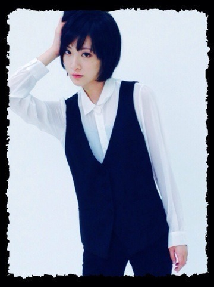

| 2013/12 01 Sun | 12月なっちまったよ。 |
生駒ちゃんです。
生駒ちゃんの月になりました！
乃木坂12月生まれたくさんいるけど生駒ちゃんが一番最後に誕生日迎える！
なんか嬉しい。
締めくくり的なっ！ヽ(・∀・)ﾉ
あぁ欲しい物いっぱいある〜ヽ(・∀・)ﾉ
とりあえずリヴァイ兵長のフィギュア欲しい！
ふぉっふぉふぉっふぉふぉっふぉ。
お掃除リヴァイさんのフィギュアもねっ！
ふぉっふぉふぉっふぉふぉっふぉ。
個人PV見た方いらっしゃいますか〜ヽ(・∀・)ﾉ

なんかよく生駒ちゃんのイメージは写真から入る人はおとなしい子。
テレビから入る人は明るくてちょっと変わった子というイメージがあると思いますが、実は本物はそんな感じじゃあまーりないんですよね〜ヽ( ´ー｀)ノ
よくそれでイメージと違う！
と言われます。
が！
生駒ちゃんもいつもキャラ作っている訳ではないので何が違うのかな〜と悩みます。
実際の生駒ちゃんは引っ込み思案な人見知り！
自分の世界に入っているのが好きな人！
だいぶ明るくなったけどね☆
でも今回の個人PVで自分のやりたい事をさせて頂きました！
服をシンプルに黒にしたのは生駒ちゃんそういう服が好きだから。
もちろんかわいいのもすきですよっ！
これでちょっと生駒ちゃんを知ってもらえたかな〜？
ダンス大好き！
ダンスする時はもう一人の自分が出てくるんです。
だからLIVEとかの生駒ちゃんも性格全然違うと思われます！
何でだろ〜？
AB型だから？
なんて話をしてみました。

あ〜雪が見たい！
寒い所に行きたい！
パワーチャージヽ(・∀・)ﾉ☆
質問！
皆さんがこれをすればパワーチャージ出来るって物は何ですか？
物、事に限らずなんでもよいですよ！
生駒ちゃんは漫画読むのがパワーチャージ☆
よろしくお願いします！
へばなっ！☆
コメント(696)
2013/12/01 10:18